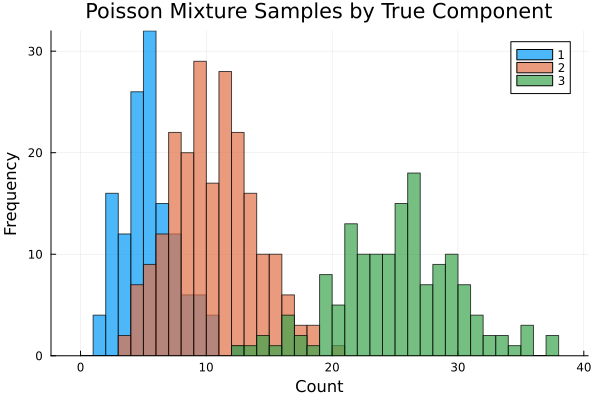
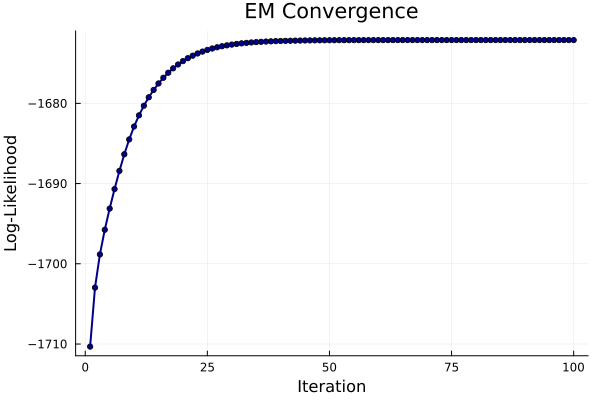
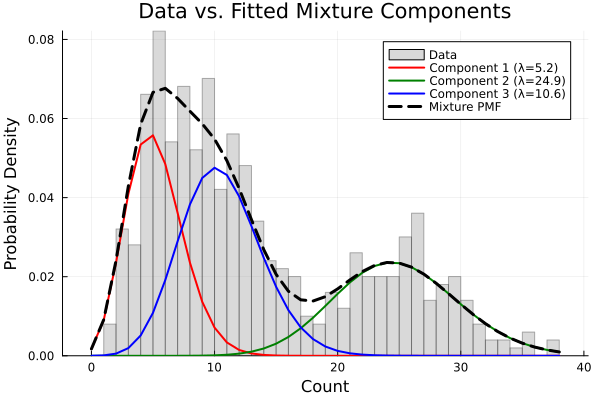

Simulating and Fitting a Poisson Mixture Model
This tutorial demonstrates how to build and fit a Poisson Mixture Model (PMM) with StateSpaceDynamics.jl using the Expectation-Maximization (EM) algorithm. We'll cover simulation, fitting, diagnostics, interpretation, and practical considerations.
What is a Poisson Mixture Model?
A PMM assumes each observation $x_i \in \{0,1,2,\ldots\}$ is drawn from one of $k$ Poisson distributions with rates $\lambda_1,\ldots,\lambda_k$. The component assignment is a latent categorical variable $z_i \in \{1,\ldots,k\}$ with mixing weights $\pi_1,\ldots,\pi_k$ where $\sum_j \pi_j = 1$.
Generative process:
- Draw $z_i \sim \text{Categorical}(\boldsymbol{\pi})$
- Given $z_i = j$, draw $x_i \sim \text{Poisson}(\lambda_j)$
PMMs are useful for count data from heterogeneous sub-populations (e.g., spike counts from different neuron types, customer transaction counts from different segments, or event frequencies across different regimes).
EM Algorithm Overview
EM maximizes the marginal log-likelihood $\log p(\mathbf{x} | \boldsymbol{\pi}, \boldsymbol{\lambda})$ by iterating:
- E-step: Compute responsibilities $\gamma_{ij} = P(z_i = j | x_i, \boldsymbol{\theta})$
- M-step: Update parameters to maximize expected complete-data log-likelihood
For Poisson mixtures, the M-step has closed-form updates: $\pi_j \leftarrow \frac{1}{n} \sum_i \gamma_{ij}, \quad \lambda_j \leftarrow \frac{\sum_i \gamma_{ij} x_i}{\sum_i \gamma_{ij}}$
Load Required Packages
using StateSpaceDynamics
using LinearAlgebra
using Random
using Plots
using StableRNGs
using StatsPlots
using DistributionsFix RNG for reproducible simulation and k-means seeding
rng = StableRNG(1234);Create True Poisson Mixture Model
We'll simulate from a mixture of $k=3$ Poisson components with distinct rates and mixing weights. These parameters create well-separated components that should be recoverable by EM.
k = 3
true_λs = [5.0, 10.0, 25.0] # Poisson rates per component
true_πs = [0.25, 0.45, 0.30] # Mixing weights (sum to 1)
true_pmm = PoissonMixtureModel(k, true_λs, true_πs);
print("True model: k=$k components\n")
for i in 1:k
print("Component $i: λ=$(true_λs[i]), π=$(true_πs[i])\n")
endTrue model: k=3 components
Component 1: λ=5.0, π=0.25
Component 2: λ=10.0, π=0.45
Component 3: λ=25.0, π=0.3Generate Synthetic Data
Draw $n$ independent samples. The labels indicate true component membership for each observation (unknown in practice and must be inferred).
n = 500
labels = rand(rng, Categorical(true_πs), n)
data = [rand(rng, Poisson(true_λs[labels[i]])) for i in 1:n];
print("Generated $n samples with count range [$(minimum(data)), $(maximum(data))]\n");Generated 500 samples with count range [1, 38]Visualize samples by true component membership Components with larger $\lambda$ shift mass toward higher counts
p1 = histogram(data;
group=labels,
bins=0:1:maximum(data),
bar_position=:dodge,
xlabel="Count", ylabel="Frequency",
title="Poisson Mixture Samples by True Component",
alpha=0.7, legend=:topright
)
Fit Poisson Mixture Model with EM
Construct model with $k$ components and fit using EM algorithm. Key options:
maxiter: Maximum EM iterationstol: Convergence tolerance (relative log-likelihood improvement)initialize_kmeans=true: Use k-means for stable initialization
fit_pmm = PoissonMixtureModel(k)
_, lls = fit!(fit_pmm, data; maxiter=100, tol=1e-6, initialize_kmeans=true);
print("EM converged in $(length(lls)) iterations\n")
print("Log-likelihood improved by $(round(lls[end] - lls[1], digits=1))\n");Iteration 1: Log-likelihood = -1710.3229886596362
Iteration 2: Log-likelihood = -1702.9680482063893
Iteration 3: Log-likelihood = -1698.8309290884672
Iteration 4: Log-likelihood = -1695.7547169128559
Iteration 5: Log-likelihood = -1693.1154979878702
Iteration 6: Log-likelihood = -1690.6853772053314
Iteration 7: Log-likelihood = -1688.4177326934916
Iteration 8: Log-likelihood = -1686.3418347324184
Iteration 9: Log-likelihood = -1684.4944012593412
Iteration 10: Log-likelihood = -1682.8851608231137
Iteration 11: Log-likelihood = -1681.4952244017736
Iteration 12: Log-likelihood = -1680.2921200865414
Iteration 13: Log-likelihood = -1679.2437758111446
Iteration 14: Log-likelihood = -1678.3246924964808
Iteration 15: Log-likelihood = -1677.516219277042
Iteration 16: Log-likelihood = -1676.8046105450028
Iteration 17: Log-likelihood = -1676.179065658506
Iteration 18: Log-likelihood = -1675.630435568035
Iteration 19: Log-likelihood = -1675.1505482771656
Iteration 20: Log-likelihood = -1674.7319209998645
Iteration 21: Log-likelihood = -1674.3676631709736
Iteration 22: Log-likelihood = -1674.0514533023088
Iteration 23: Log-likelihood = -1673.777533303151
Iteration 24: Log-likelihood = -1673.540698536673
Iteration 25: Log-likelihood = -1673.3362782205015
Iteration 26: Log-likelihood = -1673.1601071159046
Iteration 27: Log-likelihood = -1673.0084911994204
Iteration 28: Log-likelihood = -1672.87816999003
Iteration 29: Log-likelihood = -1672.7662776657642
Iteration 30: Log-likelihood = -1672.670304518981
Iteration 31: Log-likelihood = -1672.5880598099864
Iteration 32: Log-likelihood = -1672.5176367036315
Iteration 33: Log-likelihood = -1672.4573796952754
Iteration 34: Log-likelihood = -1672.4058547304753
Iteration 35: Log-likelihood = -1672.3618220777093
Iteration 36: Log-likelihood = -1672.3242119114698
Iteration 37: Log-likelihood = -1672.2921024941588
Iteration 38: Log-likelihood = -1672.2647008005683
Iteration 39: Log-likelihood = -1672.2413254029427
Iteration 40: Log-likelihood = -1672.2213914222082
Iteration 41: Log-likelihood = -1672.204397348664
Iteration 42: Log-likelihood = -1672.1899135399226
Iteration 43: Log-likelihood = -1672.1775722130542
Iteration 44: Log-likelihood = -1672.1670587597714
Iteration 45: Log-likelihood = -1672.158104227287
Iteration 46: Log-likelihood = -1672.1504788217057
Iteration 47: Log-likelihood = -1672.1439863047278
Iteration 48: Log-likelihood = -1672.138459168626
Iteration 49: Log-likelihood = -1672.1337544871033
Iteration 50: Log-likelihood = -1672.1297503516362
Iteration 51: Log-likelihood = -1672.1263428141465
Iteration 52: Log-likelihood = -1672.1234432664478
Iteration 53: Log-likelihood = -1672.1209761960408
Iteration 54: Log-likelihood = -1672.1188772656137
Iteration 55: Log-likelihood = -1672.1170916706792
Iteration 56: Log-likelihood = -1672.115572735947
Iteration 57: Log-likelihood = -1672.1142807162316
Iteration 58: Log-likelihood = -1672.1131817727355
Iteration 59: Log-likelihood = -1672.1122470993248
Iteration 60: Log-likelihood = -1672.1114521771128
Iteration 61: Log-likelihood = -1672.1107761387905
Iteration 62: Log-likelihood = -1672.1102012265976
Iteration 63: Log-likelihood = -1672.1097123304178
Iteration 64: Log-likelihood = -1672.1092965940645
Iteration 65: Log-likelihood = -1672.108943079956
Iteration 66: Log-likelihood = -1672.1086424834207
Iteration 67: Log-likelihood = -1672.108386889442
Iteration 68: Log-likelihood = -1672.1081695654839
Iteration 69: Log-likelihood = -1672.1079847851622
Iteration 70: Log-likelihood = -1672.107827678115
Iteration 71: Log-likelihood = -1672.107694102189
Iteration 72: Log-likelihood = -1672.1075805347543
Iteration 73: Log-likelihood = -1672.1074839800945
Iteration 74: Log-likelihood = -1672.1074018907414
Iteration 75: Log-likelihood = -1672.1073321004292
Iteration 76: Log-likelihood = -1672.1072727671224
Iteration 77: Log-likelihood = -1672.1072223245208
Iteration 78: Log-likelihood = -1672.1071794408122
Iteration 79: Log-likelihood = -1672.1071429836056
Iteration 80: Log-likelihood = -1672.107111990078
Iteration 81: Log-likelihood = -1672.1070856416013
Iteration 82: Log-likelihood = -1672.1070632421856
Iteration 83: Log-likelihood = -1672.107044200061
Iteration 84: Log-likelihood = -1672.1070280121128
Iteration 85: Log-likelihood = -1672.107014250614
Iteration 86: Log-likelihood = -1672.1070025519186
Iteration 87: Log-likelihood = -1672.1069926068665
Iteration 88: Log-likelihood = -1672.1069841526087
Iteration 89: Log-likelihood = -1672.1069769656985
Iteration 90: Log-likelihood = -1672.1069708561852
Iteration 91: Log-likelihood = -1672.1069656625677
Iteration 92: Log-likelihood = -1672.106961247548
Iteration 93: Log-likelihood = -1672.1069574944186
Iteration 94: Log-likelihood = -1672.106954303958
Iteration 95: Log-likelihood = -1672.1069515918116
Iteration 96: Log-likelihood = -1672.1069492862835
Iteration 97: Log-likelihood = -1672.1069473264185
Iteration 98: Log-likelihood = -1672.1069456603773
Iteration 99: Log-likelihood = -1672.106944244134
Iteration 100: Log-likelihood = -1672.10694304022
EM converged in 100 iterations
Log-likelihood improved by 38.2Display learned parameters
print("Learned parameters:\n")
for i in 1:k
print("Component $i: λ=$(round(fit_pmm.λₖ[i], digits=2)), π=$(round(fit_pmm.πₖ[i], digits=3))\n")
endLearned parameters:
Component 1: λ=5.22, π=0.319
Component 2: λ=24.88, π=0.295
Component 3: λ=10.58, π=0.386Monitor EM Convergence
EM guarantees non-decreasing log-likelihood. Monotonic ascent indicates proper convergence.
p2 = plot(lls;
xlabel="Iteration", ylabel="Log-Likelihood",
title="EM Convergence",
marker=:circle, markersize=3, lw=2,
legend=false, color=:darkblue
)
annotate!(p2, length(lls)*0.7, lls[end]*0.98,
text("Final LL: $(round(lls[end], digits=1))", 10))
Visual Model Assessment
Overlay fitted component PMFs and overall mixture PMF on normalized histogram. Components should explain major modes and tail behavior in the data.
p3 = histogram(data;
bins=0:1:maximum(data), normalize=true, alpha=0.3,
xlabel="Count", ylabel="Probability Density",
title="Data vs. Fitted Mixture Components",
label="Data", color=:gray
)
x_range = collect(0:maximum(data))
colors = [:red, :green, :blue]3-element Vector{Symbol}:
:red
:green
:bluePlot individual component PMFs
for i in 1:k
λᵢ = fit_pmm.λₖ[i]
πᵢ = fit_pmm.πₖ[i]
pmf_i = πᵢ .* pdf.(Poisson(λᵢ), x_range)
plot!(p3, x_range, pmf_i;
lw=2, color=colors[i],
label="Component $i (λ=$(round(λᵢ, digits=1)))"
)
endPlot overall mixture PMF
mixture_pmf = reduce(+, (πᵢ .* pdf.(Poisson(λᵢ), x_range)
for (λᵢ, πᵢ) in zip(fit_pmm.λₖ, fit_pmm.πₖ)))
plot!(p3, x_range, mixture_pmf;
lw=3, linestyle=:dash, color=:black,
label="Mixture PMF"
)
Posterior Responsibilities (Soft Clustering)
Responsibilities $\gamma_{ij} = P(z_i = j | x_i, \hat{\boldsymbol{\theta}})$ quantify how likely each observation belongs to each component. These provide soft assignments and uncertainty quantification.
function responsibilities_pmm(λs::AbstractVector, πs::AbstractVector, x::AbstractVector)
k, n = length(λs), length(x)
Γ = zeros(n, k)
for i in 1:n
for j in 1:k
Γ[i, j] = πs[j] * pdf(Poisson(λs[j]), x[i])
end
row_sum = sum(Γ[i, :]) # Normalize to get probabilities
if row_sum > 0
Γ[i, :] ./= row_sum
end
end
return Γ
end
Γ = responsibilities_pmm(fit_pmm.λₖ, fit_pmm.πₖ, data);Hard assignments (if needed) are argmax over responsibilities
hard_labels = [argmax(Γ[i, :]) for i in 1:n];Calculate assignment accuracy compared to true labels
accuracy = mean(labels .== hard_labels)
print("Component assignment accuracy: $(round(accuracy*100, digits=1))%\n");Component assignment accuracy: 26.4%Information Criteria for Model Selection
When $k$ is unknown, compare models using AIC/BIC:
- AIC = $2p - 2\text{LL}$
- BIC = $p \log(n) - 2\text{LL}$
where parameter count $p = (k-1) + k = 2k-1$ (mixing weights + rates)
function compute_ic(lls::AbstractVector, n::Int, k::Int)
ll = last(lls)
p = 2k - 1
return (AIC = 2p - 2ll, BIC = p*log(n) - 2ll)
end
ic = compute_ic(lls, n, k)
print("Information criteria: AIC = $(round(ic.AIC, digits=1)), BIC = $(round(ic.BIC, digits=1))\n");Information criteria: AIC = 3354.2, BIC = 3375.3Parameter Recovery Assessment
print("\n=== Parameter Recovery Assessment ===\n")
λ_errors = [abs(true_λs[i] - fit_pmm.λₖ[i]) / true_λs[i] for i in 1:k]
π_errors = [abs(true_πs[i] - fit_pmm.πₖ[i]) for i in 1:k]
print("Rate recovery errors (%):\n")
for i in 1:k
print("Component $i: $(round(λ_errors[i]*100, digits=1))%\n")
end
print("Mixing weight recovery errors:\n")
for i in 1:k
print("Component $i: $(round(π_errors[i], digits=3))\n")
end
=== Parameter Recovery Assessment ===
Rate recovery errors (%):
Component 1: 4.4%
Component 2: 148.8%
Component 3: 57.7%
Mixing weight recovery errors:
Component 1: 0.069
Component 2: 0.155
Component 3: 0.086Model Selection Example
Demonstrate fitting multiple values of k and comparing via BIC
print("\n=== Model Selection Demo ===\n")
k_range = 1:5
bic_scores = Float64[]
aic_scores = Float64[]
for k_test in k_range
pmm_test = PoissonMixtureModel(k_test)
_, lls_test = fit!(pmm_test, data; maxiter=50, tol=1e-6, initialize_kmeans=true)
ic_test = compute_ic(lls_test, n, k_test)
push!(aic_scores, ic_test.AIC)
push!(bic_scores, ic_test.BIC)
print("k=$k_test: AIC=$(round(ic_test.AIC, digits=1)), BIC=$(round(ic_test.BIC, digits=1))\n")
end
=== Model Selection Demo ===
Iteration 1: Log-likelihood = -2446.0120010620803
Iteration 2: Log-likelihood = -2446.0120010620803
Converged at iteration 2
k=1: AIC=4894.0, BIC=4898.2
Iteration 1: Log-likelihood = -1738.6367937636003
Iteration 2: Log-likelihood = -1718.86881601072
Iteration 3: Log-likelihood = -1710.766397285559
Iteration 4: Log-likelihood = -1708.0519299745506
Iteration 5: Log-likelihood = -1707.250191286412
Iteration 6: Log-likelihood = -1707.0295528175745
Iteration 7: Log-likelihood = -1706.9711016226252
Iteration 8: Log-likelihood = -1706.9559232890333
Iteration 9: Log-likelihood = -1706.952022286828
Iteration 10: Log-likelihood = -1706.951024949262
Iteration 11: Log-likelihood = -1706.9507706482918
Iteration 12: Log-likelihood = -1706.9507058942397
Iteration 13: Log-likelihood = -1706.950689416812
Iteration 14: Log-likelihood = -1706.9506852253805
Iteration 15: Log-likelihood = -1706.950684159377
Iteration 16: Log-likelihood = -1706.950683888285
Converged at iteration 16
k=2: AIC=3419.9, BIC=3432.5
Iteration 1: Log-likelihood = -1674.3394886097904
Iteration 2: Log-likelihood = -1673.8437289538654
Iteration 3: Log-likelihood = -1673.5448876413834
Iteration 4: Log-likelihood = -1673.3191444797621
Iteration 5: Log-likelihood = -1673.1344159569105
Iteration 6: Log-likelihood = -1672.9791651024796
Iteration 7: Log-likelihood = -1672.8476294338886
Iteration 8: Log-likelihood = -1672.7359383478708
Iteration 9: Log-likelihood = -1672.6410550688036
Iteration 10: Log-likelihood = -1672.5604545913868
Iteration 11: Log-likelihood = -1672.4919985445808
Iteration 12: Log-likelihood = -1672.4338668811472
Iteration 13: Log-likelihood = -1672.3845091937176
Iteration 14: Log-likelihood = -1672.342605282911
Iteration 15: Log-likelihood = -1672.307031736111
Iteration 16: Log-likelihood = -1672.2768332322419
Iteration 17: Log-likelihood = -1672.2511978552209
Iteration 18: Log-likelihood = -1672.229435884824
Iteration 19: Log-likelihood = -1672.2109616146888
Iteration 20: Log-likelihood = -1672.1952777991135
Iteration 21: Log-likelihood = -1672.1819623735453
Iteration 22: Log-likelihood = -1672.1706571344066
Iteration 23: Log-likelihood = -1672.1610581012212
Iteration 24: Log-likelihood = -1672.1529073193847
Iteration 25: Log-likelihood = -1672.1459858938388
Iteration 26: Log-likelihood = -1672.1401080722246
Iteration 27: Log-likelihood = -1672.135116221857
Iteration 28: Log-likelihood = -1672.1308765667834
Iteration 29: Log-likelihood = -1672.1272755709763
Iteration 30: Log-likelihood = -1672.1242168700446
Iteration 31: Log-likelihood = -1672.1216186686074
Iteration 32: Log-likelihood = -1672.1194115327905
Iteration 33: Log-likelihood = -1672.1175365178356
Iteration 34: Log-likelihood = -1672.1159435799927
Iteration 35: Log-likelihood = -1672.1145902293542
Iteration 36: Log-likelihood = -1672.1134403871658
Iteration 37: Log-likelihood = -1672.112463416383
Iteration 38: Log-likelihood = -1672.1116332992162
Iteration 39: Log-likelihood = -1672.1109279393013
Iteration 40: Log-likelihood = -1672.1103285695156
Iteration 41: Log-likelihood = -1672.1098192494599
Iteration 42: Log-likelihood = -1672.1093864389788
Iteration 43: Log-likelihood = -1672.1090186361407
Iteration 44: Log-likelihood = -1672.108706069971
Iteration 45: Log-likelihood = -1672.108440439546
Iteration 46: Log-likelihood = -1672.108214692569
Iteration 47: Log-likelihood = -1672.1080228372768
Iteration 48: Log-likelihood = -1672.1078597827775
Iteration 49: Log-likelihood = -1672.1077212034547
Iteration 50: Log-likelihood = -1672.1076034238097
k=3: AIC=3354.2, BIC=3375.3
Iteration 1: Log-likelihood = -1678.7545220178122
Iteration 2: Log-likelihood = -1673.4418231847699
Iteration 3: Log-likelihood = -1672.78805641298
Iteration 4: Log-likelihood = -1672.6218070104662
Iteration 5: Log-likelihood = -1672.5630848674682
Iteration 6: Log-likelihood = -1672.5325894646137
Iteration 7: Log-likelihood = -1672.5104408748073
Iteration 8: Log-likelihood = -1672.4913049961713
Iteration 9: Log-likelihood = -1672.4736609582992
Iteration 10: Log-likelihood = -1672.4570257655141
Iteration 11: Log-likelihood = -1672.4412115993114
Iteration 12: Log-likelihood = -1672.4261220347555
Iteration 13: Log-likelihood = -1672.4116940766623
Iteration 14: Log-likelihood = -1672.3978803742282
Iteration 15: Log-likelihood = -1672.3846428485897
Iteration 16: Log-likelihood = -1672.3719497923973
Iteration 17: Log-likelihood = -1672.3597741915082
Iteration 18: Log-likelihood = -1672.3480925899769
Iteration 19: Log-likelihood = -1672.3368842637979
Iteration 20: Log-likelihood = -1672.3261306012005
Iteration 21: Log-likelihood = -1672.3158146326944
Iteration 22: Log-likelihood = -1672.305920673292
Iteration 23: Log-likelihood = -1672.2964340498215
Iteration 24: Log-likelihood = -1672.2873408931973
Iteration 25: Log-likelihood = -1672.278627980473
Iteration 26: Log-likelihood = -1672.2702826150146
Iteration 27: Log-likelihood = -1672.2622925361657
Iteration 28: Log-likelihood = -1672.254645851441
Iteration 29: Log-likelihood = -1672.2473309862935
Iteration 30: Log-likelihood = -1672.2403366472877
Iteration 31: Log-likelihood = -1672.2336517957008
Iteration 32: Log-likelihood = -1672.2272656290625
Iteration 33: Log-likelihood = -1672.2211675688823
Iteration 34: Log-likelihood = -1672.2153472529399
Iteration 35: Log-likelihood = -1672.20979453115
Iteration 36: Log-likelihood = -1672.2044994639073
Iteration 37: Log-likelihood = -1672.1994523224334
Iteration 38: Log-likelihood = -1672.1946435902978
Iteration 39: Log-likelihood = -1672.1900639658188
Iteration 40: Log-likelihood = -1672.1857043649911
Iteration 41: Log-likelihood = -1672.1815559245642
Iteration 42: Log-likelihood = -1672.1776100051436
Iteration 43: Log-likelihood = -1672.1738581940874
Iteration 44: Log-likelihood = -1672.1702923080857
Iteration 45: Log-likelihood = -1672.166904395364
Iteration 46: Log-likelihood = -1672.1636867373431
Iteration 47: Log-likelihood = -1672.1606318498432
Iteration 48: Log-likelihood = -1672.157732483658
Iteration 49: Log-likelihood = -1672.1549816246202
Iteration 50: Log-likelihood = -1672.1523724930398
k=4: AIC=3358.3, BIC=3387.8
Iteration 1: Log-likelihood = -1684.4266454299284
Iteration 2: Log-likelihood = -1680.1086264113785
Iteration 3: Log-likelihood = -1678.0960896959189
Iteration 4: Log-likelihood = -1676.8714526882643
Iteration 5: Log-likelihood = -1676.0159959955806
Iteration 6: Log-likelihood = -1675.3732654306505
Iteration 7: Log-likelihood = -1674.8687705990963
Iteration 8: Log-likelihood = -1674.4609035865699
Iteration 9: Log-likelihood = -1674.1240873854774
Iteration 10: Log-likelihood = -1673.8415912855694
Iteration 11: Log-likelihood = -1673.6019603707036
Iteration 12: Log-likelihood = -1673.3970601025821
Iteration 13: Log-likelihood = -1673.220929456481
Iteration 14: Log-likelihood = -1673.0690691009866
Iteration 15: Log-likelihood = -1672.937978352034
Iteration 16: Log-likelihood = -1672.8248443989264
Iteration 17: Log-likelihood = -1672.7273319517292
Iteration 18: Log-likelihood = -1672.6434433219083
Iteration 19: Log-likelihood = -1672.571429174296
Iteration 20: Log-likelihood = -1672.5097349771092
Iteration 21: Log-likelihood = -1672.4569709845846
Iteration 22: Log-likelihood = -1672.4118960559474
Iteration 23: Log-likelihood = -1672.3734081886635
Iteration 24: Log-likelihood = -1672.3405371577362
Iteration 25: Log-likelihood = -1672.3124367863604
Iteration 26: Log-likelihood = -1672.288375924349
Iteration 27: Log-likelihood = -1672.2677281585677
Iteration 28: Log-likelihood = -1672.24996073229
Iteration 29: Log-likelihood = -1672.234623269844
Iteration 30: Log-likelihood = -1672.2213368364241
Iteration 31: Log-likelihood = -1672.2097837207273
Iteration 32: Log-likelihood = -1672.1996981758816
Iteration 33: Log-likelihood = -1672.1908582247302
Iteration 34: Log-likelihood = -1672.1830785401917
Iteration 35: Log-likelihood = -1672.176204348125
Iteration 36: Log-likelihood = -1672.1701062639422
Iteration 37: Log-likelihood = -1672.1646759577782
Iteration 38: Log-likelihood = -1672.159822538888
Iteration 39: Log-likelihood = -1672.15546955493
Iteration 40: Log-likelihood = -1672.1515525105099
Iteration 41: Log-likelihood = -1672.1480168202281
Iteration 42: Log-likelihood = -1672.1448161229348
Iteration 43: Log-likelihood = -1672.1419108946766
Iteration 44: Log-likelihood = -1672.139267307739
Iteration 45: Log-likelihood = -1672.1368562918249
Iteration 46: Log-likelihood = -1672.134652761068
Iteration 47: Log-likelihood = -1672.1326349768674
Iteration 48: Log-likelihood = -1672.1307840219092
Iteration 49: Log-likelihood = -1672.129083365202
Iteration 50: Log-likelihood = -1672.1275185016616
k=5: AIC=3362.3, BIC=3400.2Plot information criteria vs number of components
p4 = plot(k_range, [aic_scores bic_scores];
xlabel="Number of Components (k)", ylabel="Information Criterion",
title="Model Selection via Information Criteria",
label=["AIC" "BIC"], marker=:circle, lw=2
)
optimal_k_aic = k_range[argmin(aic_scores)]
optimal_k_bic = k_range[argmin(bic_scores)]
print("Optimal k: AIC suggests k=$optimal_k_aic, BIC suggests k=$optimal_k_bic\n");Optimal k: AIC suggests k=3, BIC suggests k=3Summary
This tutorial demonstrated the complete Poisson Mixture Model workflow:
Key Concepts:
- Discrete mixtures: Model count data as mixture of Poisson distributions
- EM algorithm: Iterative optimization with closed-form M-step updates
- Soft clustering: Posterior responsibilities provide probabilistic assignments
- Model selection: Information criteria help choose appropriate number of components
Applications:
- Spike count analysis in neuroscience
- Customer transaction modeling in business analytics
- Event frequency analysis in reliability engineering
- Gene expression count clustering in bioinformatics
Technical Insights:
- Initialization strategy significantly affects final solution quality
- Label switching is a fundamental identifiability issue in mixture models
- Information criteria provide principled approach to model complexity selection
- Component separation quality affects parameter recovery accuracy
Extensions:
- Zero-inflated Poisson mixtures for excess zero counts
- Negative Binomial mixtures for overdispersed count data
- Bayesian approaches for uncertainty quantification
- Mixture regression models for count data with covariates
Poisson mixture models provide a flexible framework for modeling heterogeneous count data, enabling both clustering and density estimation while maintaining interpretable probabilistic structure.
This page was generated using Literate.jl.